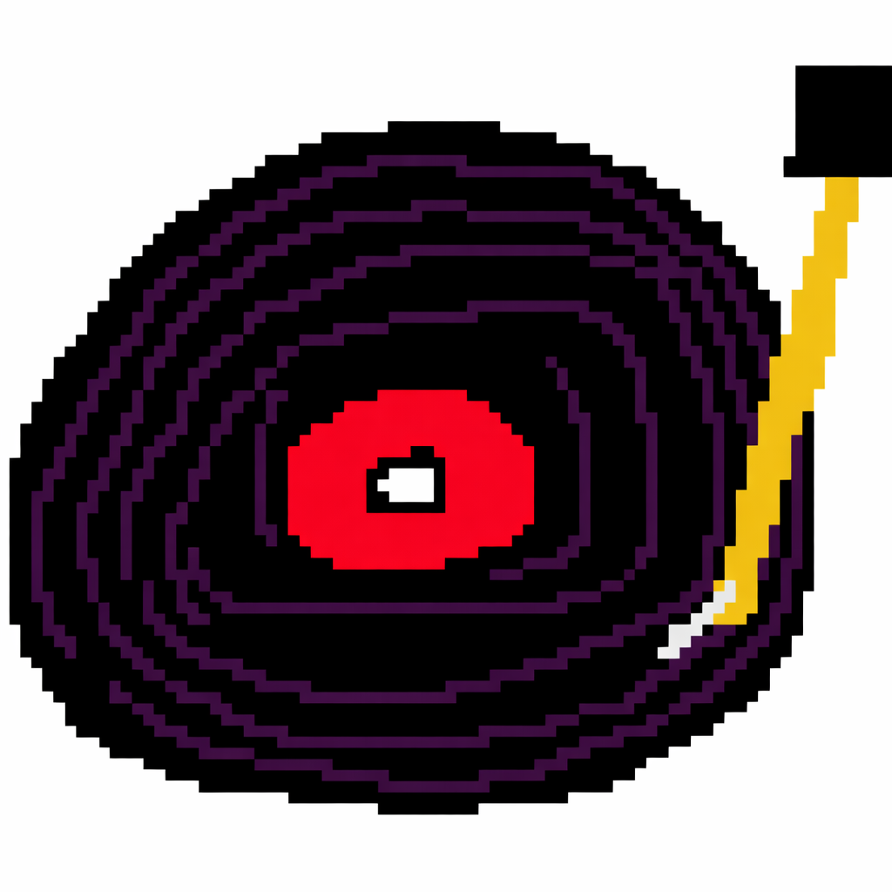

Matteo Traverso
Sound artist || modular synth player || improviser || sound installations and spatial audio enthusiast || digital synth developer
Works
About
Contact
exploring boundaries of numb senses
Sound research through electronic abstraction and physical space.
acousmatic &
multichannel
installations &
performances

records